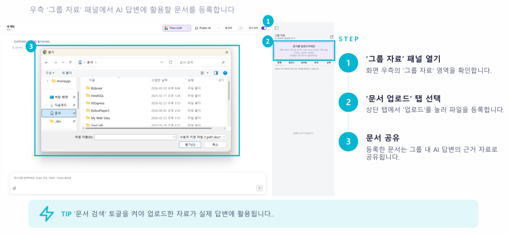
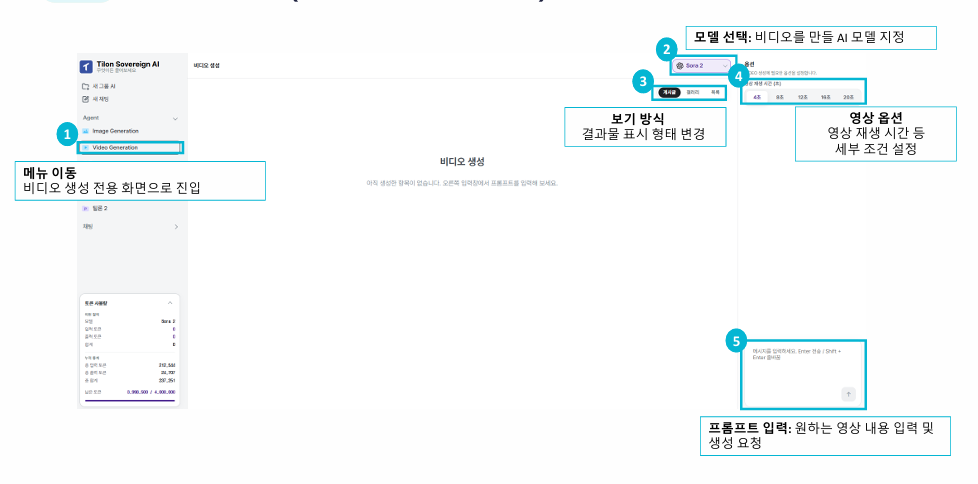

공개 여부 설정개인 그룹으로 사용할지, 팀원과 함께 쓰는 공유 그룹으로 사용할지 결정합니다.
멤버 초대공유 그룹을 켠 경우 사내 멤버를 검색해 초대합니다.
생성 완료생성 버튼을 누르면 좌측 그룹 목록에 새로운 그룹이 추가됩니다.
그룹별로 업로드 문서와 대화가 분리되어 주제별 자료 관리가 편리합니다.
2-2
새 채팅 시작하기
1
새 채팅 클릭
좌측 메뉴의 새 채팅을 선택합니다.
2
대화 시작
안내 문구와 함께 빈 대화창이 열립니다.
3
자동 저장
진행한 대화는 좌측 채팅 목록에 자동 저장됩니다.
주제가 바뀌면 새 채팅으로 시작하는 것이 이전 맥락과 섞이지 않아 답변 품질에 좋습니다.
SECTION 3 · 3-1
LLM 모델 선택
화면 상단의 모델 선택 버튼에서 답변에 사용할 AI 모델을 변경합니다.
3-2
웹 검색 · 문서 검색
상단 우측 두 개의 토글로 답변에 참고할 정보 범위를 조절합니다.
동시 켜기웹 최신 정보와 업로드한 사내 문서를 모두 참고합니다.웹 검색만 켜기사내 문서를 제외하고 외부 웹 정보와 일반 지식을 사용합니다.문서 검색만 켜기외부 검색 없이 업로드한 사내 문서 기반으로 답변합니다.동시 꺼짐 불가정확한 AI 답변 생성을 위해 최소 하나는 반드시 켜져 있어야 합니다.
SECTION 4 · 4-1
메시지 작성 및 전송
화면 하단 입력창에 원하는 질문을 작성하고 전송합니다.
4-2
파일 첨부

클립 아이콘 클릭입력창 좌측의 클립 아이콘을 클릭합니다.
파일 선택참고할 문서나 이미지 파일을 선택해 첨부합니다.
여러 문서를 반복 활용한다면 파일 첨부 대신 그룹 자료로 등록해 두면 편리합니다.
SECTION 5 · 5-1
문서 업로드
우측 그룹 자료 패널에서 AI 답변에 활용할 문서를 등록합니다.
5-2
임베딩(학습) 상태 확인
상태 탭 확인전체, 업로드, 임베딩, 완료, 실패 탭으로 진행 상태를 확인합니다.임베딩 = 학습(색인)AI가 문서를 이해하고 검색 가능한 형태로 색인하는 과정입니다.새로고침으로 갱신우측 상단 새로고침으로 최신 처리 상태를 확인합니다.
실패로 표시되면 파일 형식과 용량을 확인한 뒤 다시 업로드해 주세요.
SECTION 6 · 6-1
이미지 생성 에이전트
좌측 Agent 메뉴에서 텍스트 설명만으로 이미지를 생성합니다.
6-2
비디오 생성 에이전트

1메뉴 이동
비디오 생성 전용 화면으로 진입합니다.
2모델 선택
비디오를 만들 AI 모델을 지정합니다.
3보기 방식
결과물 표시 형태를 변경합니다.
4영상 옵션
영상 재생 시간 등 세부 조건을 설정합니다.
5프롬프트 입력
원하는 영상 내용을 입력하고 생성을 요청합니다.
이제 시작해 보세요
본 매뉴얼을 참고해 iStation의 대화, 자료 관리, 에이전트 기능을 업무 흐름에 맞게 활용할 수 있습니다.


 상태확인.png)